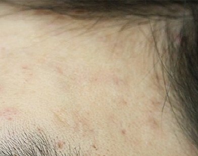

거울을 보다가 앞머리를 넘겼을 때 이마 끝과 머리카락이 시작되는 자리에 살색 돌기가 줄지어 보여 놀라셨다는 분들이 적지 않습니다. 평소에는 앞머리에 가려 있다가 머리를 묶거나 땀을 닦을 때 비로소 눈에 들어오기 때문에, 발견했을 때는 이미 여러 개로 늘어나 있는 경우도 많습니다. 이 글에서는 이마와 헤어라인에 생기는 편평사마귀가 어떤 생활 습관과 맞물려 번지기 쉬운지, 비슷해 보이는 다른 돌기와는 어떻게 구별하는지, 그리고 치료와 그 이후의 관리는 어떻게 하는지 순서대로 정리해 보겠습니다.
전주에서 진료해 보면 이마·헤어라인 편평사마귀는 어떤 모양으로 보이나요?
대개 지름 1~3mm 정도의 납작하고 매끈한 돌기가 피부색이나 옅은 갈색으로 여러 개 모여 있는 모습입니다. 위에서 보면 윗면이 평평하게 깎인 듯하고, 손끝으로 쓸어 보면 아주 살짝 도드라진 느낌만 납니다. 이마 한가운데보다는 앞머리 끝이 닿는 선, 관자놀이 쪽 잔머리 자리, 가르마 양옆처럼 머리카락과 피부가 맞닿는 경계에 몰려 있는 경우가 많습니다. 가려움이나 통증이 거의 없어 오래 방치되기 쉽고, 긁거나 문지른 자국을 따라 일렬로 늘어서는 모양이 보이면 편평사마귀를 먼저 의심해 볼 만합니다.
앞머리가 이마에 닿으면 편평사마귀가 더 번질 수 있나요?
앞머리 자체가 바이러스를 만들지는 않지만, 하루 종일 같은 자리를 쓸고 지나가는 마찰이 번짐을 거들 수 있습니다. 편평사마귀는 사람유두종바이러스(HPV)가 피부 겉층의 작은 틈으로 들어가 생기는 병변이라, 마찰이 반복되는 곳일수록 미세한 상처가 생기고 이웃 피부로 옮겨 가기 쉬워집니다. 특히 앞머리를 손가락으로 자주 정리하거나, 고개를 숙일 때마다 머리카락이 이마를 쓸어내리는 습관이 있으면 병변이 앞머리 끝선을 따라 띠처럼 퍼지는 모습을 보이기도 합니다. 땀이나 피지로 이마가 축축해지는 여름철, 앞머리가 이마에 달라붙어 있는 시간이 길어지는 것도 피부 장벽을 약하게 만드는 요인이 됩니다.
모자나 헤어밴드를 쓰는 습관도 영향을 주나요?
모자 챙 안쪽의 땀받이나 헤어밴드처럼 이마를 꽉 누르는 물건은 그 테두리를 따라 병변이 늘어나는 원인이 될 수 있습니다. 압박과 땀, 반복되는 착용과 벗기가 한 자리에 겹치기 때문입니다. 운동할 때 쓰는 헤어밴드나 세안할 때 쓰는 머리띠는 젖은 채로 다시 쓰는 경우가 많아 위생 관리도 함께 신경 써야 합니다. 병변이 있는 동안에는 이런 물건을 가족과 같이 쓰지 말고, 자주 세탁해 마른 상태로 쓰는 편이 좋습니다. 모자를 꼭 써야 한다면 이마 닿는 부분이 넉넉한 것을 고르고, 땀이 찼을 때는 벗어서 이마를 가볍게 닦아 주시길 권합니다.


왁스·스프레이 같은 헤어 제품과 드라이 바람은 어떤 영향을 주나요?
헤어 제품과 드라이 바람이 편평사마귀를 직접 만들지는 않지만, 헤어라인 피부를 자극하고 건조하게 만들어 번지기 쉬운 환경을 만들 수 있습니다. 왁스를 손에 덜어 앞머리를 만지다 보면 손끝이 이마 경계를 반복해서 문지르게 되고, 스프레이 성분이 이마에 남으면 따가움이나 각질이 생길 수 있습니다. 뜨거운 드라이 바람을 가까이에서 오래 쐬면 이마 피부가 건조해지고 당기면서 무의식적으로 긁게 됩니다. 아래 표는 진료실에서 자주 듣는 습관을 영향과 관리 요령으로 나눠 본 것입니다.
| 습관 | 피부에 주는 영향 | 관리 요령 |
|---|---|---|
| 앞머리를 손으로 자주 정리 | 손끝 마찰로 경계 피부에 미세한 상처 | 빗을 쓰고 손으로 만지는 횟수 줄이기 |
| 모자·헤어밴드 장시간 착용 | 테두리 압박과 땀이 한 자리에 겹침 | 여유 있는 크기, 자주 세탁, 공유하지 않기 |
| 왁스·스프레이 사용 | 제품이 이마에 남아 자극·각질 유발 | 이마 쪽은 피해서 바르고 저녁에 꼼꼼히 세안 |
| 뜨거운 바람으로 가까이 드라이 | 이마 건조와 당김, 긁는 습관으로 이어짐 | 미지근한 바람, 거리 두기, 보습제 가볍게 |
| 앞머리를 이마에 붙인 채 취침 | 피지·땀이 고인 상태로 장시간 접촉 | 잠들기 전 앞머리를 넘기고 베개 커버 자주 교체 |
머리카락 경계의 돌기, 좁쌀여드름·모낭염과는 어떻게 구별하나요?
모양만으로 헷갈리는 경우가 많아, 돌기 가운데에 구멍이나 고름이 있는지와 모낭을 중심으로 생겼는지를 함께 살펴야 합니다. 헤어라인은 피지 분비가 많고 헤어 제품이 닿는 자리라 좁쌀여드름이 잘 생기고, 머리카락 뿌리 주변에는 모낭염도 흔합니다. 이마 위쪽에서는 피지선증식증이나 비립종이 섞여 있는 경우도 있습니다. 같은 이마에 여러 종류가 함께 있으면 치료 방법이 달라지므로, 진료실에서는 돌기 하나하나를 확대해서 살펴봅니다.
| 구분 | 편평사마귀 | 좁쌀여드름 | 모낭염 |
|---|---|---|---|
| 모양 | 윗면이 평평하고 매끈한 납작한 돌기 | 가운데 막힌 모공이 보이는 작은 돌기 | 머리카락 뿌리를 중심으로 한 붉은 구진·고름 |
| 색 | 피부색~옅은 갈색 | 피부색~흰색 | 붉은색, 노란 고름점 |
| 배열 | 긁은 선을 따라 줄지어 늘어나기도 함 | 모공 단위로 흩어져 있음 | 모낭마다 하나씩 |
| 증상 | 대부분 가렵거나 아프지 않음 | 짜면 하얀 피지가 나옴 | 누르면 아프거나 따가움 |
| 원인 | 사람유두종바이러스 감염 | 피지와 각질로 모공이 막힘 | 모낭에 생긴 세균 등의 염증 |
좁쌀여드름으로 생각하고 손으로 짜내면 편평사마귀라면 오히려 주변으로 옮겨 갈 수 있으니, 확실하지 않을 때는 건드리지 않는 것이 먼저입니다.
헤어라인 편평사마귀는 침과 코트라 CO2레이저로 어떻게 치료하나요?
후한의원 전주점에서는 허정위 대표원장이 병변의 깊이와 크기를 직접 보고 침과 코트라 CO2레이저의 역할을 나눠 치료합니다. 겉으로 얕게 올라온 작은 병변은 코트라 CO2레이저로 정리하고, 뿌리가 깊거나 크기가 있는 병변은 침으로 먼저 접근하는 방식입니다. 헤어라인은 머리카락이 바로 맞닿아 있어 시술 범위를 세밀하게 잡아야 하고, 이마는 얼굴에서 가장 먼저 눈에 띄는 자리라 색소침착 부담도 함께 고려합니다. 침은 열을 가하지 않는 방식이어서 이런 부위에서 부담을 덜 수 있습니다. 병변 개수가 많을 때는 한 번에 모두 정리할지, 부위를 나눠 진행할지를 피부 상태와 일정에 맞춰 상의해 정하며, 결과와 회복 기간에는 개인차가 있습니다.
치료 직후 머리 감기·드라이·헤어 제품은 언제부터 다시 써도 되나요?
치료 부위에 딱지가 앉아 있는 동안에는 그 자리를 세게 문지르거나 제품이 직접 닿지 않게 하는 것이 원칙입니다. 머리는 감을 수 있지만 샴푸 거품이 이마로 흘러내리지 않도록 고개를 뒤로 젖혀 헹구고, 수건으로는 문지르지 말고 눌러서 물기를 닦아 주세요. 드라이는 미지근한 바람으로 이마와 거리를 두고 짧게 하는 편이 좋습니다. 왁스나 스프레이는 딱지가 저절로 떨어지고 피부가 진정된 뒤에 다시 쓰시고, 딱지는 억지로 떼지 말고 자연스럽게 떨어질 때까지 기다려야 흉터와 색소침착을 줄이는 데 도움이 됩니다. 모자나 헤어밴드도 이 기간에는 쉬어 가는 편이 좋습니다.
이마 편평사마귀가 다시 늘지 않도록 평소에 무엇을 챙기면 좋을까요?
핵심은 이마 경계를 덜 건드리고, 새로 올라오는 작은 돌기를 일찍 발견하는 것입니다. 앞머리를 정리할 때는 손 대신 빗을 쓰고, 헤어 제품은 이마에서 한두 마디 떨어진 곳부터 바르는 습관을 들여 보세요. 저녁 세안 때는 헤어라인까지 꼼꼼히 씻어 남은 제품을 지우고, 건조함이 느껴지면 순한 보습제를 가볍게 발라 줍니다. 베개 커버와 수건은 자주 바꾸고 따로 쓰는 것이 좋습니다. 수면과 컨디션 관리도 피부 면역에 영향을 줄 수 있으니 무리한 일정이 이어질 때는 더 신경 써 주시고, 한 달에 한 번쯤 밝은 곳에서 이마 끝을 넘겨 살펴보면서 새 돌기가 보이면 개수가 적을 때 진료를 받는 편이 부담이 덜합니다. 전주 완산구 후한의원 전주점은 목요일과 일요일이 휴진이고 토요일은 오전 10시부터 오후 2시까지 진료합니다.